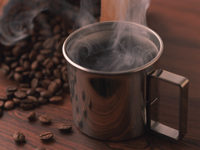

Dedicado aos Amantes de Café

O que é Café Gourmet?
Café Gourmet é um café de alta qualidade, feito com grãos 100% arábica, que são mais refinados e oferecem um sabor mais complexo e equilibrado. Esses grãos passam por um processo rigoroso de cultivo, colheita e torrefação para garantir um aroma e sabor superiores, geralmente com notas distintas (como frutas, nozes ou chocolate) que se destacam na bebida. O café gourmet tem baixo nível de amargor e é ideal para quem busca uma experiência mais rica e diferenciada na xícara.